By DF7BE.
$Id$
History
~~~~~~~
2026-04-21 DF7BE For Raspberry Pi 4 and LINUXMint, to be contiunued for Macos
2026-04-12 DF7BE For Raspberry Pi 5, to be contiunued for LINUXMint, Raspberry Pi and Macos
2026-04-05 DF7BE For console/terminal programs on Windows and Ubuntu, to be contiunued for LINUXMint, Raspberry Pi and Macos
2026-04-02 DF7BE OK for Windows and Ubuntu, LINUXMint
2026-03-29 DF7BE First issue.
This feature is under construction,
to be continued with:
MacOS.
The final description will be delivered
as soon as possible.
Contents
________
1. Preface
1.1 Prerequisites
2. Create basic icon file
3. Create and convert icon files
3.1 Windows
3.2 LINUX with GTK2
3.3 MacOS (Darwin) with GTK2
4. Insert icons and create shortcuts
4.1 Windows
4.2 LINUX with GTK2
4.3 MacOS (Darwin) with GTK2
5. Console/terminal programs
6. Troubleshooting
1. Preface
==========
This document describe the steps to
- create icon files
- insert them into a HWGUI program
- create desktop and dock/dash (taskbar) shortcuts for
quick start of a program.
Note:
Because all of my computers are set to german system language,
the english words are guessed.
Please open a ticket to send us the correct words in english.
As an appended file you can also send us corresponding
screen shots. TNX!
Terms (Fachbegriffe)
--------------------
Desktop/Schreibtisch:
The path name where the desktop is located,
depends on the system language settings.
It is found directly under the home directory.
Taskbar
-------
This is the term on Windows.
The position can be configured.
Normally, it appears on the bottom side
of the screen.
On other operating systems
there are other names used:
- Dock
- Dash
German:
- Starter
- Leiste
Start icons:
- Deskop shortcut
- Launcher
German:
- Verknüpfung
General description about shortcuts:
------------------------------------
The icon of a running application may not
correspond with a pinned icon on the dock/dash if the wmclass
of the window does not match what the system expects based
on the information in the launcher.
Find the wmclass of the running application.
Start the application, and then, in the standard Ubuntu desktop,
open the looking glass,
hit Alt+F2,
then type
lg and press ENTER key,
and on the Windows tab, take note of the
wmclass property of your window.
Suppose it is myapplication (here Hwguiicon).
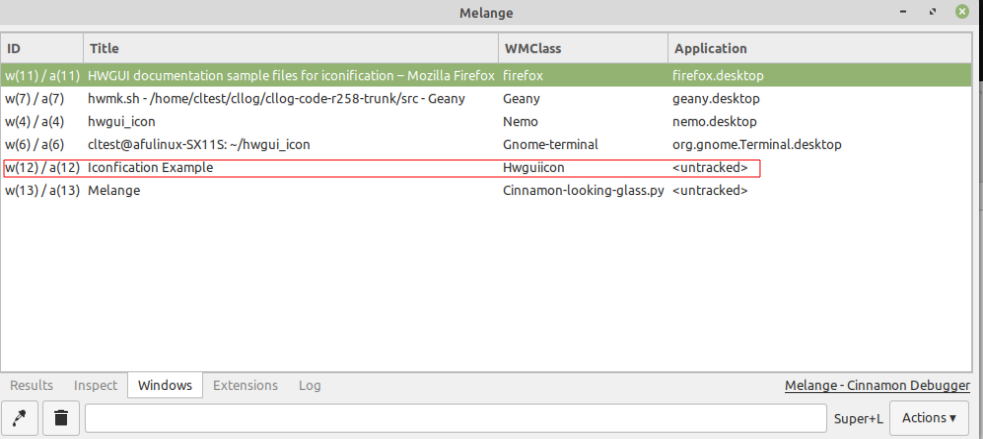
In desktop environments running on Xorg,
xprop can be used to find the wmclass: Find out with command xprop WM_CLASS and click in the open application. The wmclass name is displayed in the terminal windows.
In the .desktop launcher of the application, in the [Desktop Entry] section, add line StartupWMClass=myapplication
1.1 Prerequisites
-----------------
Be shure, that the Installation of Harbour and
HWGUI is done and
the main sample program is running.
2. Create basic icon file
=========================
First paint a basic image file with a suitable
program (for example Windows Paint)
with size 1024x1024 as Windows bitmap (.bmp).
This is the maximum size for some operation systems.
The size and format is strictly necessary.
In several cases, the size is shrinked.
Note:
When using images, even parts thereof, from external sources,
you should respect copyright to avoid legal problems,
especially if the images are published.
For the sample program the sample file is named "hwgui_1024x1024.bmp".
For next steps the file must be converted to
PNG format with a suitable program,
on Windows "Irfanview" (Free, but not Open Source)
is a good program, also for other image operations.
3. Create and convert icon files
================================
3.1 Windows
===========
The icon file is embedded into the EXE, also possible in DLL's.
The resource compiler "winres" will do this for you at
compile time.
- First reduce icon file to 256x256 and
convert them into *.ico format
(possible also with "Paint" and "IrfanView").
Continue with 4.1
The installation of shortcuts is very easy.
3.2 LINUX with GTK2
===================
The recommended size for icons on GTK is 128x128.
The sub directory iconify/desktop contains in extra
directories the sample desktop file,
they must be checked and modified
for your own needs and optional dependand of the
system settings.
3.3 MacOS (Darwin) with GTK2
============================
The maximum size on MacOS is 1024x1024.
But some more lower sized are needed
and must be collected in a container with
extension *.icns.
A simple shell script are delivered
to create all resized icon files
and collect them in a .icns file. (macosiconconv.sh)
4. Insert icons and create shortcuts
====================================
4.1 Windows
===========
Files:
- hwguiicon.prg
- hwguiicon.hbp
- hwgui_256x256.ico
- hwgui.rc
- Windows.Manifest
- Windows64.Manifest
Tested on Windows 11 with MinGW (gcc (GCC) 4.6.2).
Open a Console Window (CMD) and set the path by
pfad.bat
Compile the sample program by command:
hbmk2 hwguiicon.hbp
Go with the Explorer to the directory
where the sample program is located, now
you can see the symbol with the HWGUI icon:
Start the program with:
hwguiicon.exe

Also the icon appears on the taskbar:
Close the sample program.
Create a shortcut on the desktop:
Go to a blank position on the desktop
and mouse rightclick:

Say "New" (Neu) and "Link" (Verknüpfung),
In the first windows click "Browse..." (Durchsuchen...)
and navigate to "hwguiicon.exe".
If selected, say "Continue" (Weiter).
Enter a text for display, for example "HWGUI Icon sample".
End with "Finish" (Fertig stellen).
Pin the start symbol to the taskbar:
Start the program by double click on the desktop shortcut and
go to the icon on the taskbar and mouse right click:

Say: "Pin at taskbar" (An Taskleiste anheften)
Now the symbol appears permantly.
Close the program and test start:
Click onto symbol and the sample program
starts again (only one click).
Ready !
4.2 LINUX with GTK2
===================
- hwguiicon.prg
- hwguiicon.hbp
- hwgui_128x128.png
- hwguiicon.desktop
Pre steps for all LINUX distributions:
-------------------------------------
Checked on:
- Ubuntu
- LINUXMint - Raspberry Pi 4, 5
- Create in the home directory a directory containing
the compiled sample program (sample running environment):
mkdir hwgui_icon
- Open a terminal and
compile the sample program by:
hbmk2 hwguiicon.hbp
- Copy the generated EXE file "hwguiicon" into
the above mentioned directory.
Also following file:
hwgui_128x128.png
- Start the program by:
./hwguiicon

- Now the "Gear" icon appeared on the dock , if the sample
program is running.
- Go with the mouse cursor to the icon, the name of the WMClass is displayed:
This is needed for entry: StartupWMClass=applicationname The name is the file name of the EXE file, but the first character is in upper case: Hwguiicon
LINUXMint:
The wmclass name is not displayed alike on Ubuntu, so find out in a terminal with command
xprop WM_CLASS
and click in the open application. The result is diplayed in the terminal.
Another alternative to find out the wmclass of the running application. Start the application, and then, in the standard Ubuntu desktop, open the looking glass hit Alt+F2, then type "lg" and press ENTER key, and on the Windows tab, take note of the wmclass property of your window. (see screenshot in "1. Preface" ==> "General description about shortcuts").
- Terminate the program.
Create a desktop shortcut:
- Now copy the file "hwguiicon.desktop"
onto the desktop.
Sample call:
cd ~/Schreibtisch
cp ~/svnwork/hwgui-code/hwgui/samples/iconify/hwguiicon.desktop .
"Schreibtisch" means "Desktop", depends on system
language setting, here german.
The icon appears on the desktop with a cross:

- Modify the values to your own needs:
Path=Path to location of the exefile
(cd to it before running the applcation)
Exec=Path and name to the exe file.
Icon=Path and name to the icon file.
(for this test this may be $HOME/hwgui_icon
or in samples/iconify in the svn work directory)
- Set execute permission:
chmod 755 ~/Schreibtisch/hwguiicon.desktop
- Check properties:
Right mouse click and be shure, that
the execute permission is allowed:

Set "Allow execute as program" (Als Programm ausführbar) to on.
LINUXMint:
LINUxMint: Here the screenshot on Mint for setting execute permission:
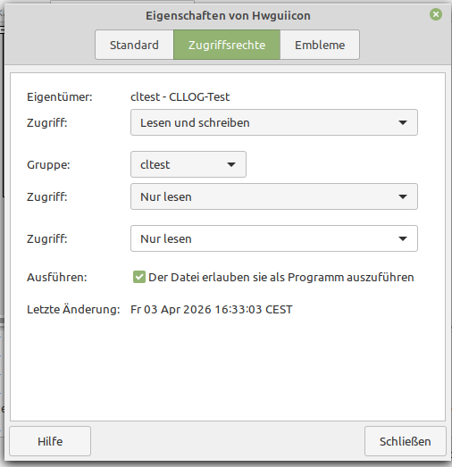
Set checkbox "Der Datei erlauben, sie als Programm auszuführen" is "Allow file to run as a program".
The icon appears immediately after start, if the file has correct entries and the execute permission is granted.
- It may be that the icon of HWGUI does not appear and the cross
symbol is visible,
move the icon symbol holding down the left mouse button
to another position on the desktop.
Otherwise the settings in the desktop file
are not correct, check them again.

- Start the program by double click.
Continue only with the next step, if the
program is running OK.
- Copy the desktop file also to:
.local/share/applications
in the home directory.
LINUXMint: The sub directory "applications" does not exist, create it before copy by: mkdir -p .local/share/applications
The easyest way to copy is (because of hidden directory)
start in terminal in the home dirctory:
cd .local/share/applications
cp ~/Schreibtisch/hwguiicon.desktop .
If this file does not exist, create it with
mkdir -p .local/share/applications
- If the program can be started from the desktop
shortcut and the program icon appears in the dock,
you can now pin the start icon onto the dock/dash.

(An Dash anheften)
The action is confirmed by a system message.
- Now close the running program and try to start it
from the dock/dash (single click left mouse button.
LINUXMint: The pin to the dock/dash is done in same way as on Ubuntu, but the german text is "An der Leiste anheften"
Raspberry Pi 5: - Set execute permission: Right mouse click onto the shortcut on the desktop:
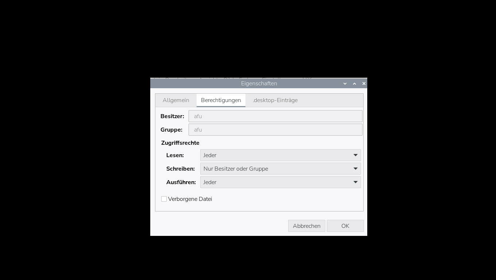
Go to tab "Permissions" (Berechtigungen) and set "Execute" (Ausführen) to "Everyone" (Jeder). Confirm setting with "OK". - Starting the sample program from the desktop shortcut, the hwgui icon (if all is configured in the correct way) appears in the Taskbar. Before start, this dialog apprear: Press "Launch" or "execute" or "start" (Ausführen) to execute the sample program. "Die Textdatei <Hwguiicon> scheint ausführbar zu sein. Was möchten Sie damit tun?" ==> The textfile >Hwguiicon< seems to be executable. What would you do with it?
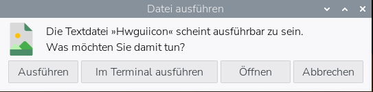
- Close the sample program. - Copy the desktop file to .local/share/applications - Now add the shortcut to the taskbar: Mouse right click on the taskbar, select
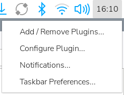
"Taskbar Preferences", the Control Centre opens: Click on button "New Item" and enter all preferences for the sample program:
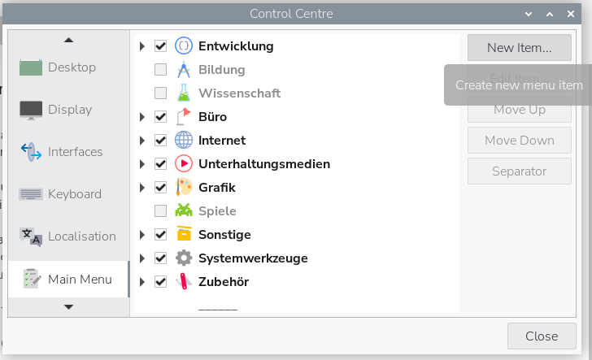
Enter the values and press "Set Icon":
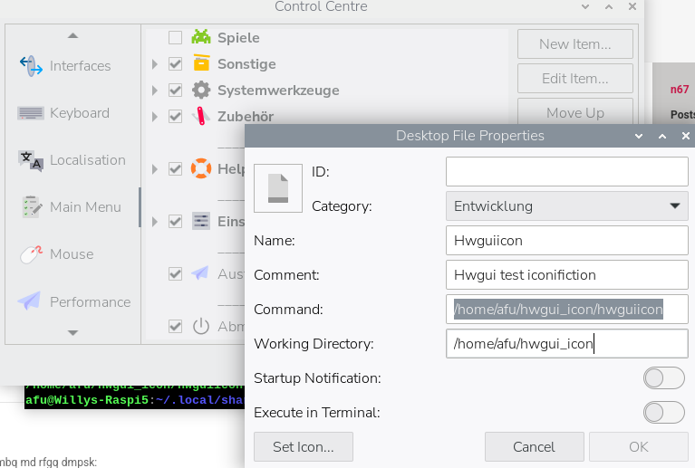
Click on "Set Icon" and a dialog with standard icons appeared:
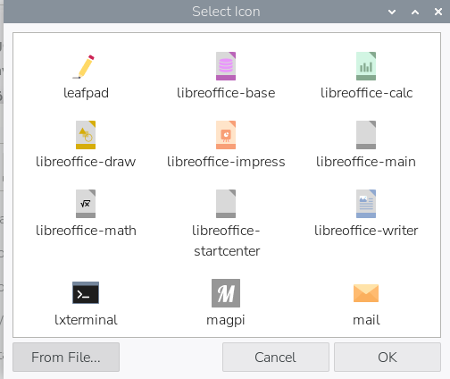
Click on "From File" to select an own icon:
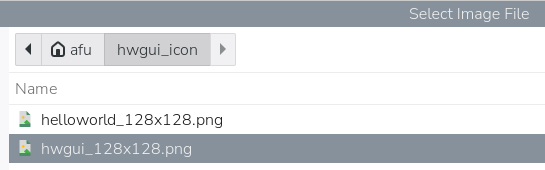
and navigate to directory, where the HWGUI-Icon is located and select "hwgui_128x128.png" Press "Select" Button at bottom of dialog.
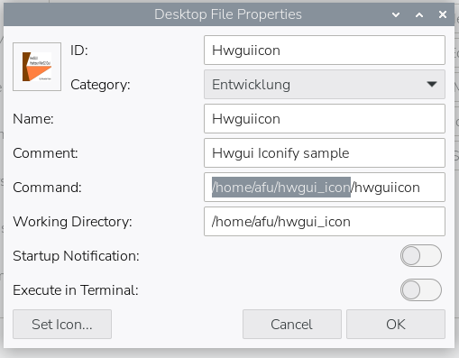
The HWGUI-Icon is now displayed on left upper corner. Press "OK" to confirm. Now the launcher is placed in the main menu.
Pin the launcher onto the taskbar:
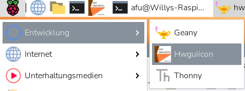
Right mouse click onto the taskbar, Select the group, where the hwgui launcher is placed and with another right click "Add to Launcher" appeared.
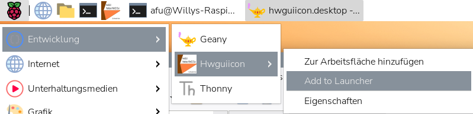
Left mouse click, the dialog is closed and the launcher is now pinned at the taskbar.
Ready !
If sample program starts successfull, the installation is finished.
Starting the HWGUI sample program, this dialog appears at first:
Press button "Launch" or "Start" or "Execute" (Ausführen) to run the program.
Advice: At this time i found no way to extend the main menu with new categories. All the solution found in the internet doesn't work. Please be patient.
Trobleshooting:
4.3 MacOS (Darwin) with GTK2
============================
<under construction>
5. Console/terminal programs
============================
Files: (basic set)
- helloworld.prg - helloworld.bmp - helloworld.png - helloworld_128x128.png - helloworld_256x256.ico - helloworld.desktop - term_apps/helloworld.sh *) - term_apps/helloworld_t.sh *)
*) Not needed for some LINUX distributions, some more files are listed in following chapters.
Advice: To port old clipper programs under MS-DOS to Harbour application, the terminal/console geometry must be set to 80x25, but on most systems the terminal/console starts with default 80x24. So set them to 80x25 in the properties dialog, in most cases, the setting is stored permanently.
On Windows, the SETMODE() function do this automatically.
For Operating systems: - Ubuntu - LINUXMint
First steps for all operating systems:
--------------------------------------
Compile the Harbour console sample program
"helloworld.prg" by
hbmk2 helloworld.prg
Create the test directory (for example)
Windows: C:\hwgui_icon
Others: ~/hwgui_icon
and copy the the exe file and the
icon file suitable for the used
operating system into it.
Windows: helloworld_256x256.ico
Linux: helloworld_128x128.png
Start the program in a terminal/console
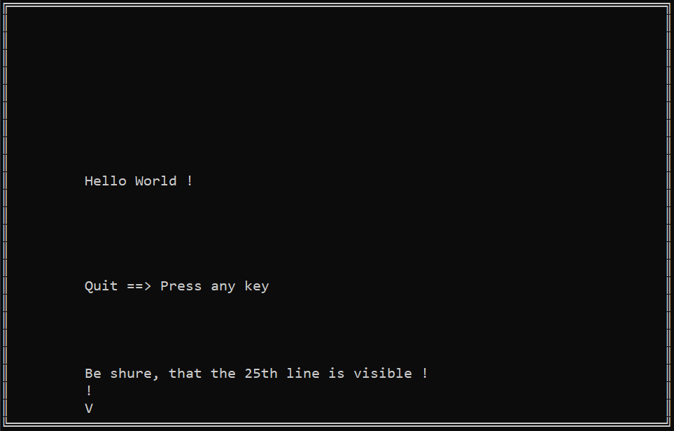
Press any key to terminate.
Be shure, that the 25th line with double line at bottom of the screen is visible.
Other operating systems: - Set the terminal/console geometry from 24x80 to 25x80 in the properties dialog.
Windows:
After start of the console app
Close the program (press any key)
Now you can create the desktop icon, it is very simple.
Right mouse click on the desktop and say "Create link" (Verknüpfung erstellen).
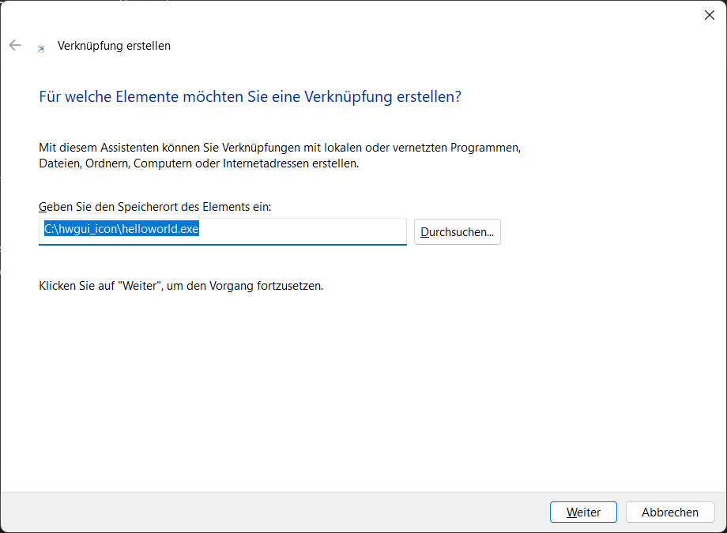
Say "Browse" or "Search" and navigate to file helloworld.exe. If ready, say "Continue" (Weiter)
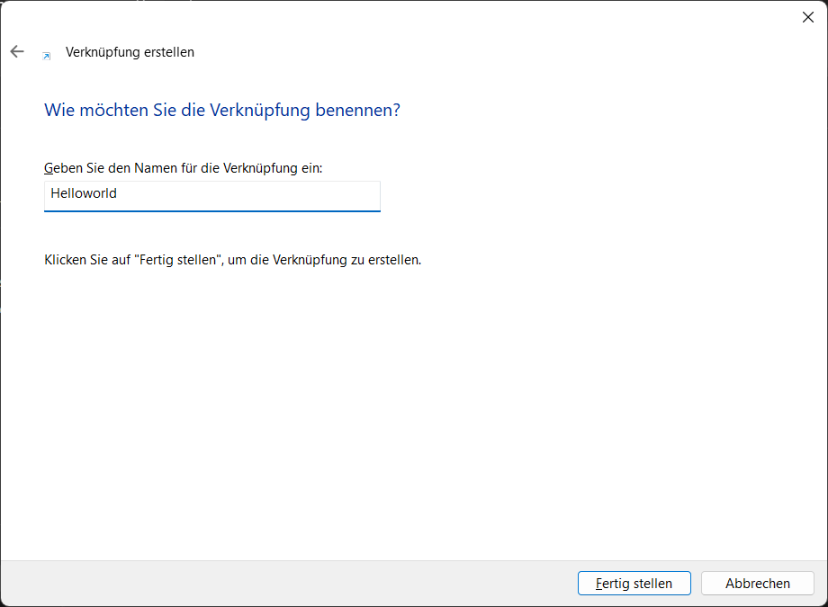
Enter a free name for this link, for example Helloworld. Press button "Finish" (Fertig stellen), if done.
And the shortcut is created, but has a standard icon displayed. Mouse right click and select "Properties of Helloworld":
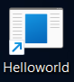
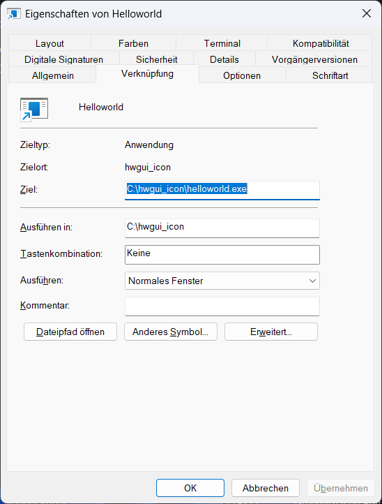
Press button "Other symbol" (Anderes Symbol):
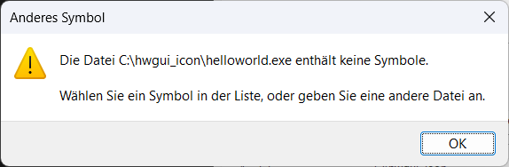
Ignore this message and say "OK" ("The EXE file contains no symbols"): Press "Search" button (Durchsuchen) and navigate to icon file "helloworld_256x256.ico"
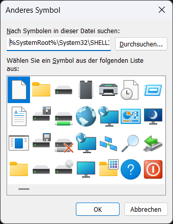
After selection the new symbol is displayed, confirm with "OK":
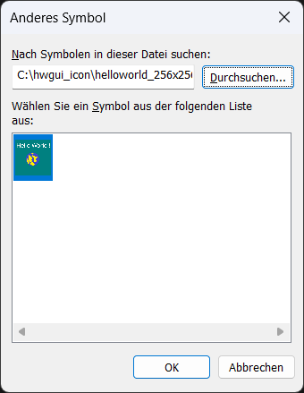
In the final dialog:
press first "Apply" or "Store" or ... (Übernehmen) and then "OK".
Try to start the program
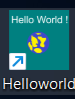
and the symbol apeared at the taskbar.
Now you can pin the symbol at the taskbar.
LINUX:
------
<under construction>
Instructions for: - Ubuntu - LINUXMint - Raspberry Pi 4 - Raspberry Pi 5
To be continued for: - MacOS
Files: - samples/iconify/helloworld.prg - samples/iconify/images/helloworld_128x128.png - samples/iconify/start_helloworld.sh For LINUXMint: - samples/iconify/desktop/Mint/helloworld.desktop - samples/iconify/desktop/Mint/hwguiicon.desktop - samples/iconify/desktop/Mint/start_helloworld.sh
For Raspberry Pi 4 (additional to list above): - samples/iconify/desktop/raspberry_pi/Pi4/helloworld.desktop - samples/iconify/desktop/raspberry_pi/Pi4/hwguiicon.desktop - samples/iconify/desktop/raspberry_pi/Pi4/start_helloworld.sh
For Raspberry Pi 5 (additional to list above): - samples/iconify/desktop/raspberry_pi/helloworld.desktop - samples/iconify/desktop/raspberry_pi/hwguiicon.desktop
Problem: The "Exec=" entry in the .desktop file has here no effect, because at first a terminal must be started with the option -e followed by a command calling the desired console/terminal program. The terminal starts in the home directory. The Workaround is, that in the command line a shell script is started, do a cd into the directory, where the console program must be started.
Also there is a difference between the behaviour on Raspberry Pi 4 and 5. For details see chapter "Troubleshooting".
Simular as above described, compile the program "helloworld.prg" by hbmk2 helloworld.prg and copy the EXE file "helloworld" to ~/hwgui_icon.
Copy also the corresponding icon file helloworld_128x128.png into this directory for example cp helloworld_128x128.png ~/hwgui_icon or with the file explorer.
Copy the sample file helloworld.desktop onto the desktop and modify to your own needs.
Create a new directory on the desktop: term_apps Do this with a file explorer or with mkdir command in a terminal. Copy helloworld.sh and helloworld_t.sh to this directory. Modify them to your own need and set execute permissions: chmod 755 ~/Schreibtisch/term_apps/helloworld.sh ~/Schreibtisch/term_apps/helloworld_t.sh chmod 755 ~/Schreibtisch/helloworld.desktop
Raspberry Pi 4 and 5: These actions for directory "term_apps" are not necessary. By using this scripts the Helloworld console does not start. (Very obscure): But do this here: Copy the script start_helloworld.sh into the directory ~/hwgui_icon
Pi 4: Adapted .desktop files and script start_helloworld.sh in directory samples/iconify/desktop/raspberry_pi/Pi4.
and set execute permission by: chmod 755 start_helloworld.sh The desktop file "helloworld.desktop" in samples/iconify/desktop/raspberry_pi is modified to start this script from there. Now the "Helloworld" should start successful in a terminal.
LINUXMint: The actions for directory "term_apps" are also not necessary. Copy the script samples/iconify/desktop/Mint/start_helloworld.sh into the directory ~/hwgui_icon and set execute permission by: chmod 755 start_helloworld.sh The desktop file "helloworld.desktop" in samples/iconify/desktop/Mint/ is modified to start this script from there. Now the "Helloworld" should start successful in a terminal.
The desktop icon appears with a cross symbol:
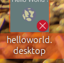
Rightclick on shortcut and select "Allow start" or "Allow launch" (Start erlauben).
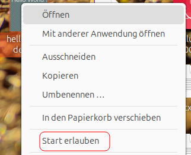
Move the shortcut with the mouse, then if all entries are correct and all execute permissions are granted, the cross symbol should disappear.
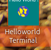
Now try to start the application:
Be shure that the 25th line with double line block character is visible. Another red point appeared at the dock symbol:
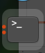
LINUXMint: The running Helloworld appears like this:
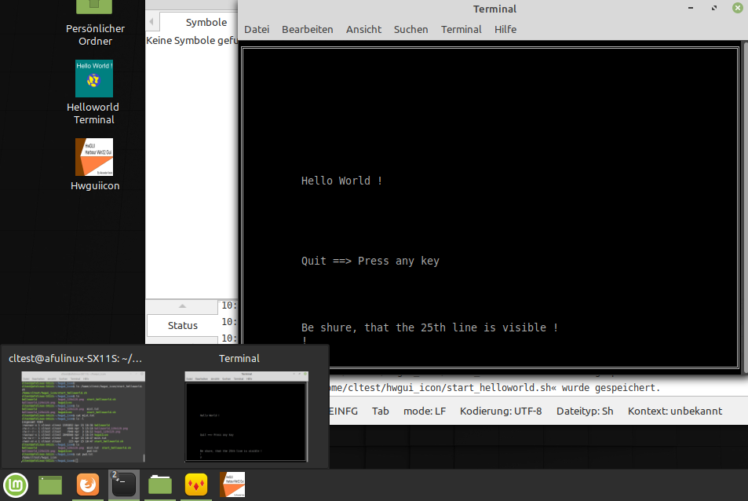
Here also there is no way to pin a shortcut at the dock.
Raspberry Pi: At this time, there is no way to place a shortcut on the dock with specified name. So: this actions for grafical applicaions have no effect on terminal application, because the main application is the terminal ! I tried this, but will be stored for future releases of the desktop environment.
Note: If the desired icon is not visible after the instructions are done as above described (only with a default icon of the system),
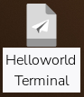
at fist try to move the icon on another position on the desktop. If this does not help, reboot the system. After login is performed, in most cases the desired icon should appear. This may work on all LINUX systems.
Advice (Raspberry Pi 4 and 5): The command sudo apt-get install extra-xdg-menus installs extra categories in the main menu. There you may find one suitable for your application(s). The administration of the main menu in the taskbar is very buggy.
~~~~~~~~~~~~~~~~~~~~~~~~~~~~~~~~~~~~~~~~~~~~~~~~~~~~ Ignore for terminal applications !!!!!!!!!!!!!! If the sub directory "applications" does not exist, create it before copy by: mkdir -p .local/share/applications Copy the desktop file also to: .local/share/applications in the home directory. The easyest way to copy is (because of hidden directory) in another terminal in the home directory:
cd .local/share/applications
cp ~/Schreibtisch/helloworld.desktop. ~~~~~~~~~~~~~~~~~~~~~~~~~~~~~~~~~~~~~~~~~~~~~~~~~~~~
6. Troubleshooting
------------------
1.) If a program do not start without any visible error message, use the direction of output channels (stdout and stderr) into a file, for example: ./helloworld 1>&2 2>mist.txt In most cases, the error message will appear here.
2.) Export problems with environment variables: A very important variable is named LD_LIBRARY_PATH and is set in the .profile or .bash_profile of the recent userid as described in the HWGUI installation instructions. This variable is necessary to search and find the Harbour and HWGUI libraries at start time. If starting a new terminal, the variable is not set. so say in the start script: export LD_LIBRARY_PATH=:/home/logger/Harbour/core-master/lib/linux/gcc:/usr/local/lib
3.) Execute path not set: The Path= parameter in the desktop file may have on some systems no effect, so make before programm call a cd to the directory, where the executable is located: cd $HOME/hwgui_icon ./helloworld
4.) Be shure, that all shell scripts (*.sh) and .desktop file have execute permission. Set it with chmod 755 <filename>:
Now have succes and fun.
73 de DF7BE,Wilfried